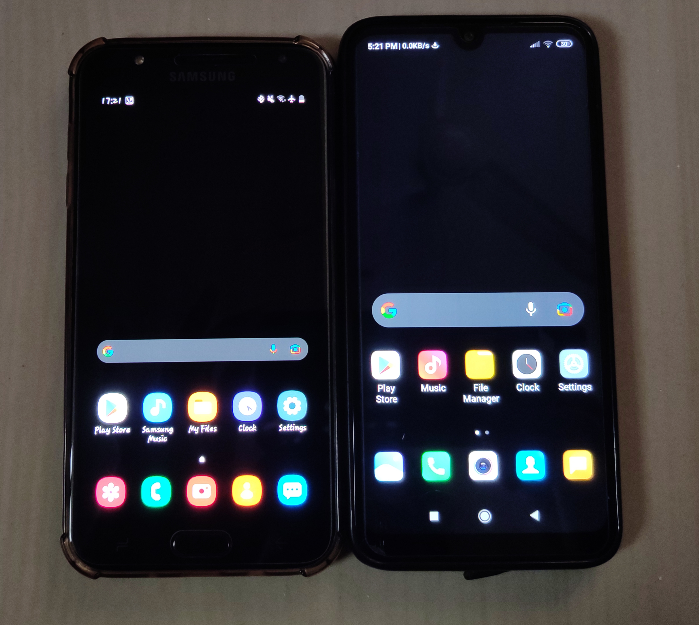

INTRODUCTION
We all use smartphones. But have you ever noticed which display your smartphone have? Display is an electronic device used for visual representation of data or images. Display plays an important role in a smartphone. The quality of content that you are enjoying on your smartphone depends on the display used by your smartphone. There are two types of display used in a smartphone: one is Active -Matrix Organic Light Emitting Diode(AMOLED) display and the other is Liquid crystal display(LCD).
AMOLED
AMOLED is a variant of the famous OLED display technology used in Televisions. In AMOLED, LED stands for Light Emitting Diode and the O here adds up as Organic LED. Further, AM is an abbreviation for Active Matrix which helps to light up a particular pixel when needed. So we now know what AMOLED stands for, let us look at how it works.
As the name suggests, OLED displays generate light from individual pixels. In other words, each LED pixel when provided the sufficient current can light up for itself. Further, all AMOLED displays also contain a TFT (Thin Film Transistor) which makes the whole process of sending the current to the right pixel a lot smoother and quicker. Further, having an Active Matrix in place, the TFT also helps to grab the right control to operate various pixels. For example, in AMOLED displays, some pixels can be completely switched off while others are on, thus, the AMOLED display produces deep blacks.
Samsung markets this technology as super AMOLED.
LCD
Unlike AMOLED displays where each pixel lights up for itself, LCDs have a dedicated backlight which is white or maybe with a blue tint because white light is the combination of all the other colours. In most cases, we have a blue light which is then passed through a yellow phosphor filter resulting in white light.
This white light is then passed through a couple of filters (first vertical than horizontal) after which the crystal elements are passed through Red, Blue and Green filters forming sub-pixels which further form pixels spread across the entire display. Also, LCDs can have both active and passive matrix depending on the requirement and the cost involved.
WHICH DISPLAY IS BETTER?
Every coin has two sides so both displays have their respective pros and cons.
AMOLED PROS
- AMOLED screens have great contrast, as the light on the screen comes from each pixel rather than a backlight. Due to this, they have the most vivid colours.
- True Black can be truly achieved Because no backlight assembly is needed. It simply dims or turns off the relevant pixels the black is as dark as it can be.
- As the display can individually light pixels, and likewise leave some pixels turned off entirely, this means less power is consumed, which leads better battery life.
- AMOLED Displays are Flexible, Can be Curved and Adaptable. Smartphones like Samsung Galaxy S7 Edge and One plus 8 pro uses curved display.
AMOLED CONS
- AMOLED displays are pricey. You rarely notice that a budget smartphone have an AMOLED display.
- AMOLED displays are less durable. If a single pixel is damaged, the screen may stop displaying. They will crack or break before the gorilla glass on top of it breaks.
LCD PROS
- LCD produces bright whites, as the backlight pushes lots of light through the pixels so, it makes it easier to read in bright light.
- All budget smartphones uses LCD screens as they are cheap.
- They have Great Viewing Angles. LCD uses IPS technology to offer 178 degrees of view without any colour shifting or colour distortion.
- LCDs are long-lasting and durable.
LCD CONS
- LCDs cannot achieve deep blacks due to the presence of an always-on backlight.
- LCDs cannot be made flexible and cannot be bent or curved due to their rigid nature.
HOW WILL YOU IDENTIFY THAT YOUR SMARTPHONE HAS AN AMOLED SCREEN OR AN LCD SCREEN?
The retail box of a smartphone mentions the display used in the smartphone or by simply searching on google you can know the display used in your smartphone. but if you want to identify the display used in your phone practically then you should try this. Apply A full black wallpaper to your smartphone. If you see any light emitting from the screen, your device has an LCD screen. Otherwise, if your screen is completely dark at full brightness, your device has an AMOLED screen.

In the above picture, you can see that I have applied black wallpaper to both phones. The one which is on left is showing dark black whereas the one which is on right showing dim black than the left one. So the left one has an AMOLED screen and the right one has an LCD screen.
DO YOU KNOW WHY IN-DISPLAY FINGERPRINT SENSOR CANNOT BE USED IN LCDs? BUT CAN BE USED IN AMOLED.
All this happens because in OLED and AMOLED screens behind the display there is no backlight illuminator, as the OLED and AMOLED display's pixels can generate enough brightness that they don't need any other backlight LED'S. Whereas in case of LCD displays the pixels can't generate enough brightness, so they need another light source which is usually placed behind the actual screen. So here this additional display is limiting the optical sensor to capture the fingerprint data as there is no place for it. This is why as of now smartphones having LCD screen has fingerprint sensor on the back panel. Due to this in-display fingerprint sensor can't be implemented in LCD screens.
CONCLUSION
From the pros and cons of both displays, we can say that AMOLED panels are superior to LCD panels if colour and battery consumption is a concern. Further, even though AMOLED panels struggle a bit with brightness levels. So at last, I would like to say that nothing is perfect in this world. Even the 24-carat gold is not 100% pure.